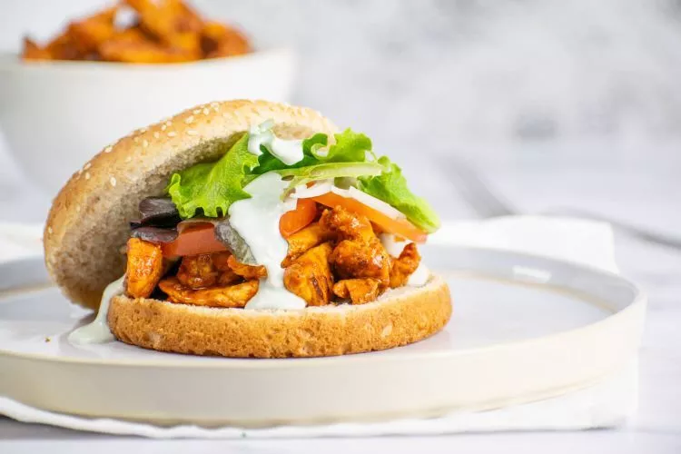

Buffalo Chicken Sandwich contents
Description
This recipe gives you exactly all the information you need to track what you just ate, nothing better than a
buffalo chicken sandwich to fill in your cravings.
Ingredients
- 1 lb. boneless skinless chicken breasts
- 1 tsp. chili powder
- 1 tsp. paprika
- Cooking spray
- Salt and pepper
- 1/4 cup buffalo sauce
- 4 tsp. butter
- 1/4 cup nonfat plain Greek yogurt
- 1/4 cup blue cheese
- 4 reduced calorie hamburger buns
Steps
- Slice or pound the chicken into thinner cutlets. Spray with cooking spray and season with chili powder, paprika, salt, and pepper.
- Heat a grill, grill pan, or skillet over medium high heat. Spray with cooking spray if needed. Cook the chicken for 3-4 minutes per side or until cooked through.
- Meanwhile mix together the yogurt and blue cheese to create a sauce for the burgers. Season with salt and pepper.
- Melt the butter and stir it into the buffalo sauce. Toss the cooked chicken breasts in this mixture.
- Assemble the sandwiches and add lettuce, tomatoes, onions, and any other toppings you like.